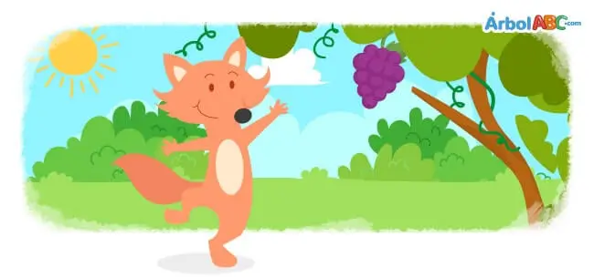

Había una vez una zorra que caminaba hambrienta por el bosque tras un largo día sin probar bocado. De repente, vio en lo alto de una parra un hermoso racimo de uvas maduras y relucientes que colgaban de una rama. Con ganas de saciar su sed y su apetito, se preparó para alcanzarlas dando un gran salto, pero las uvas estaban demasiado altas y no logró rozarlas.
Lejos de rendirse, tomó impulso una y otra vez, saltando con todas sus fuerzas sin conseguir su objetivo. Agotada por el esfuerzo y viendo que era imposible llegar hasta ellas, la zorra miró al fruto con desdén y dijo para disimular su fracaso: «No me importan, después de todo todavía están verdes y no me gustan». Y dándose media vuelta, se marchó con la cabeza en alto.